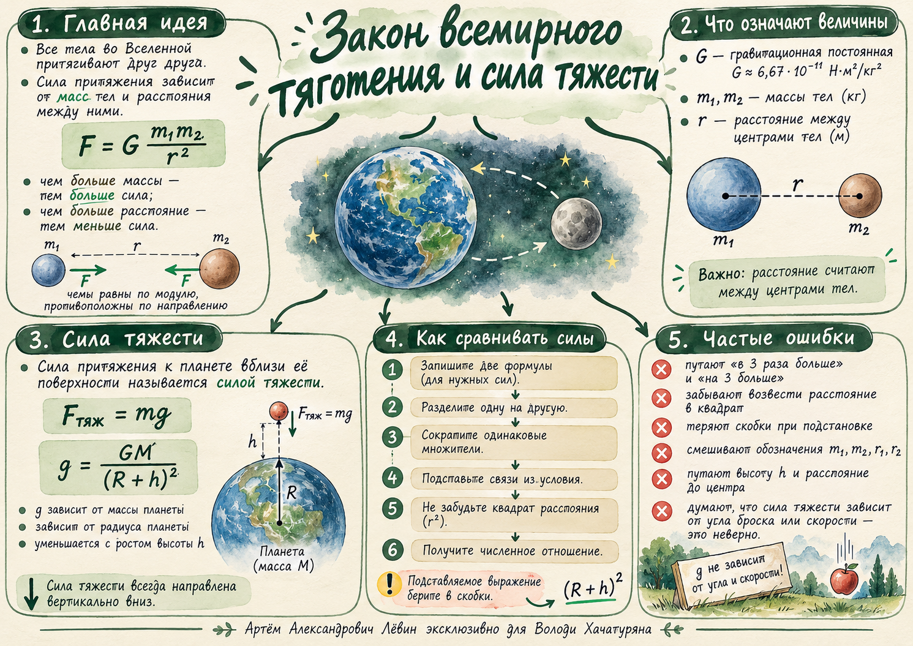

Персональный атлас / физика / 24.10.26
Гравитация: одна сила, разные расстояния
Почему спутники притягиваются к планете с разной силой? Как сила тяжести связана с законом всемирного тяготения? И почему при сравнении сил расстояние обязательно возводится в квадрат?
Ключевой маршрут: формула → отношение сил → сокращение → подстановка → проверка смысла.

Закон всемирного тяготения
Любые два тела, имеющие массу, притягиваются. При вычислении силы используем массу каждого тела и расстояние между их центрами.
G ≈ 6,67 · 10⁻¹¹ Н·м²/кг² — гравитационная постоянная. Массы m₁ и m₂ измеряются в килограммах, r — в метрах, сила F — в ньютонах. Формула применяется к материальным точкам и к сферически-симметричным телам вне друг друга.
Что увеличивает силу?
Увеличение одной массы в k раз увеличивает силу в k раз. Увеличение обеих масс вдвое увеличивает силу вчетверо.
Что уменьшает силу?
Если расстояние между центрами увеличили вдвое, сила уменьшилась вчетверо: F ~ 1/r².
Как сравнивать силы притяжения
Для двух тел около одной планеты или звезды сначала запишите обе силы, затем разделите их в нужном порядке.
- Запишите две формулы закона тяготения, сохраняя обозначения.
- Разделите одну дробь на другую, перевернув вторую дробь при переходе к умножению.
- Сократите общие множители G и массу центрального тела.
- Подставьте связи из условия: «втрое больше» → r₁ = 3r₂, «половина» → m₂ = 0,5m₁.
- Возведите всё подставленное выражение в квадрат: (1,5r)² = 2,25r².
- Проверьте, какое отношение требуется найти, и оцените физический смысл результата.
Пример 1. Два спутника
Спутники одинаковой массы, r₁ = 3r₂. Найти F₂/F₁.
Ближайший спутник притягивается в 9 раз сильнее.
Пример 2. Известны силы
При одинаковых массах F₁ = 4F₂. Найти r₁/r₂.
При извлечении квадратного корня отношение расстояний положительно.
Пример 3. Земля и Марс
Пусть масса Марса равна 0,1 массы Земли, а расстояние Марса от Солнца — 1,5 расстояния Земли от Солнца.
Сила притяжения Земли к Солнцу больше в 22,5 раза.
Сила тяжести и высота
На тело около планеты действует сила тяжести. Направление силы — к центру планеты; вблизи поверхности Земли это вертикально вниз.
У поверхности
При расчётах у поверхности Земли часто используют g ≈ 10 м/с². Угол и скорость броска на модуль силы тяжести не влияют.
На высоте h
M — масса планеты, R — её радиус, h — высота над поверхностью. До центра расстояние равно R + h.
Пример 4. Брошенный камень
Масса 200 г = 0,2 кг, угол 45°, начальная скорость 15 м/с, g = 10 м/с².
Угол и скорость не нужны для расчёта.
Пример 5. Орбита Луны
На поверхности сила 180 Н. На расстоянии 1,5R от центра Луны:
Это высота 0,5R над поверхностью Луны.
10 задач · Путь А
Начните с силы тяжести, затем переходите к отношениям сил, орбитальным радиусам и высоте. Ответы раскрываются отдельно.
- Найдите силу тяжести для тела массой 3 кг у поверхности Земли, если g = 10 м/с².
- Камень массой 250 г брошен со скоростью 12 м/с под углом 60° к горизонту. Найдите силу тяжести сразу после броска при g = 10 м/с².
- Как изменится сила притяжения, если массу каждого из двух тел удвоить при прежнем расстоянии?
- Два одинаковых спутника: r₁ = 4r₂. Найдите F₂/F₁.
- Для одинаковых спутников F₁ = 25F₂. Найдите r₁/r₂.
- У поверхности Луны сила равна 270 Н. Какова сила на расстоянии 3R от её центра?
- Тела обращаются вокруг одной планеты: m₂ = 0,5m₁; r₁ = 2R; r₂ = 8R. Найдите F₁/F₂.
- Масса второй планеты составляет четверть массы первой, а расстояние до звезды вдвое больше. Во сколько раз сила притяжения первой планеты к звезде больше?
- У поверхности планеты g₀ = 9,6 м/с². Найдите g на высоте h = R.
- На какой высоте ускорение свободного падения станет в 16 раз меньше, чем на поверхности? Ответ выразите через радиус R.
Показать ответы ко всем 10 заданиям
| № | Ответ |
|---|---|
| 1 | 30 Н |
| 2 | 2,5 Н |
| 3 | Сила увеличится в 4 раза |
| 4 | 16 |
| 5 | 0,2 |
| 6 | 30 Н |
| 7 | 32 |
| 8 | В 16 раз |
| 9 | 2,4 м/с² |
| 10 | h = 3R |
